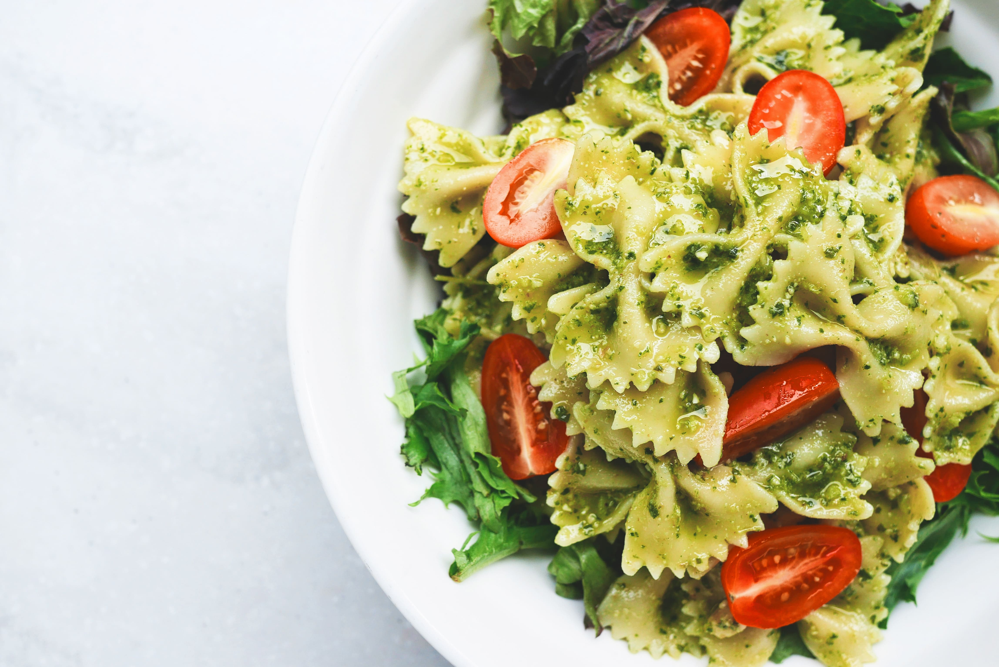

Паста
Описание товара
Паста в виде бабочек, с помидорами черри и листьями салата под соусом песто
Характеристики товара
| вес | 290.7 | г | |
| калорийность | 1010.6 | ккал | |
| 3520.0 | кдж | ||
| пищевая ценность | белки | 29.1 | г |
| жиры | 18.9 | г | |
| углеводы | 160.9 | г | |
Подробное описание товара
Паста — горячее итальянское настроение, визитная карточка итальянской кулинарии, которая в последнее время приобретает не меньшую популярность, чем пицца. Для приготовления итальянской пасты нужны специальные продукты и особенные навыки, поэтому проще заказать доставку уже готового блюда из ресторана. Наши повара используют особый состав специй и соусов, свежие овощи и базилик и, конечно, традиционные сыры — пармезан и моцарелла.